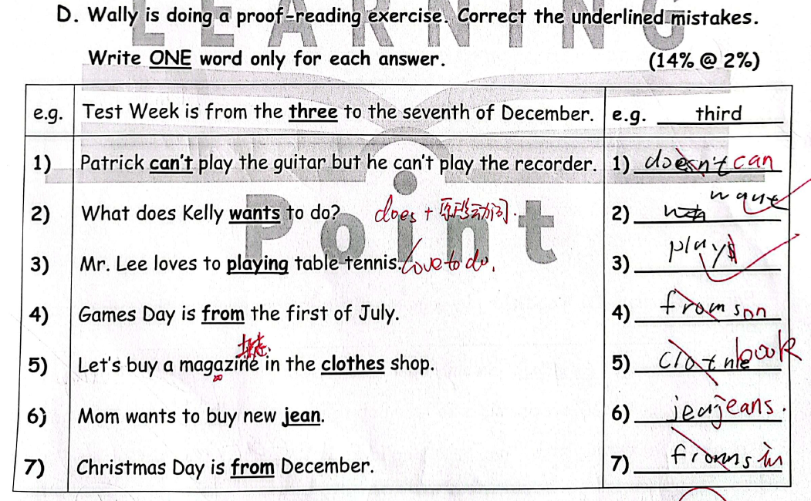
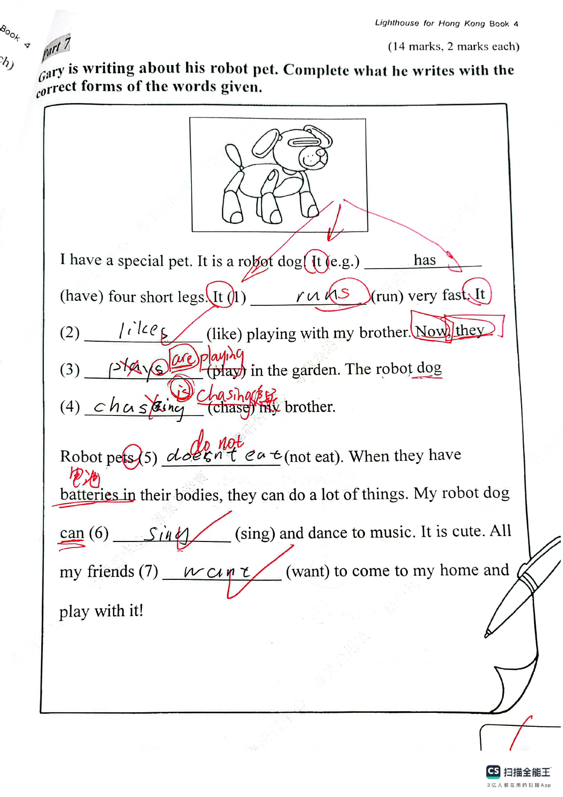

Answer: 10014: 10 Th = 1, Th = 0, H = 0, T = 1, U = 4
已掌握
| # | 单词/词组 | 中文意思 | 例句/说明 | 已掌握 |
|---|---|---|---|---|
| noun 名词 | ||||
| 1 | parents | 父母 | My parents love me. | |
| 2 | cinema | 电影院 | We watch films at the cinema. | |
| 3 | autumn | 秋天 | The leaves turn yellow in autumn. | |
| verb 动词 | ||||
| 4 | put away | 收拾、收纳 | Please put away your toys. | |
| 5 | feel | 感觉 | I feel happy today. | |
| preposition 介词 | ||||
| 6 | across | 穿过；横跨 | We walk across the road. | |
| 7 | under | 在……之下 | The cat is under the table. | |
| noun phrase 名词短语 | ||||
| 8 | primary school student | 小学生 | I am a primary school student. | |
| adjective 形容词 | ||||
| 9 | hard-working | 勤劳的，勤奋的 | She is a hard-working student. | |
| 10 | busy | 忙碌的 | Mum is busy cooking dinner. | |
| 11 | polite | 礼貌的 | It is polite to say thank you. | |
| verb phrase 动词短语 | ||||
| 12 | tell a story | 讲故事 | I tell a story to my little brother. | |
| noun/verb 名词/动词 | ||||
| 13 | exercise | 锻炼 | Exercise is good for your health. | |
| adverb 副词 | ||||
| 14 | sometimes | 有时 | I sometimes walk to school. | |
| 15 | usually | 通常 | I usually have breakfast at seven. | |
| uncategorized 未分类 | ||||
| 16 | borrow | 借用 | May I borrow your pencil? | |
| 17 | hide | 隐藏 | The children hide behind the tree. | |
| 18 | notice | 通知 | A notice on the door says the library is closed. | |
| 19 | address | 地址 | Please write your address on the envelope. | |
| 20 | fold | 折叠 | Please fold the paper in half. | |
| # | 单词/词组 | 中文意思 | 例句/说明 | 已掌握 |
|---|---|---|---|---|
| adjective 形容词 | ||||
| 1 | enormous | 巨大的 | The elephant is enormous. | |
| 2 | wrong | 错误的 | The answer is wrong. | |
| 3 | angry | 生气的 | Mum was angry because Jack sold the cow. | |
| 4 | ugly | 丑陋的 | I was hairless, toothless and ugly. | |
| 5 | careless | 粗心的；不小心的 | A careless mouse ran across the lion's paw. | |
| noun 名词 | ||||
| 6 | sausage | 香肠 | I eat a sausage for breakfast. | |
| 7 | seed | 种子 | The bird pecks a seed. | |
| 8 | fin | 鱼鳍 | A fish has a fin. | |
| 9 | dust | 灰尘 | There is dust on the shelf. | |
| 10 | lollies | 棒棒糖 | The children bought some lollies. | |
| 11 | farm | 农场 | Ben wants to go to the farm. | |
| 12 | cinema | 电影院 | We watched a film at the cinema. | |
| noun phrase 名词短语 | ||||
| 13 | convenience store | 便利店 | I buy water at the convenience store. | |
| 14 | an apple pie | 苹果派 | She'd like an apple pie. | |
| 15 | a bowl | 碗 | Put the egg into a bowl. | |
| 16 | Computer Studies | 电脑科 | Gopal is good at Computer Studies. | |
| verb 动词 | ||||
| 17 | swim | 游泳 | I can swim. | |
| 18 | knock | 敲门；敲门声 | Please knock on the door before you come in. | |
| phrase 短语 | ||||
| 19 | rhyming words | 押韵词 | "Cat" and "hat" are rhyming words. | |
| 20 | look after | 照料 | I look after my little sister. | |
| verb phrase 动词短语 | ||||
| 21 | make models | 制作模型 | I can make models but I can't make paper toys. | |
| 22 | have a barbecue | 烧烤 | I want to have a barbecue. | |
| 23 | pick fruit | 摘水果 | We pick fruit in the fruit fields. | |
| 24 | look at the moon | 赏月 | We look at the moon at night. | |
| number 数词 | ||||
| 25 | million | 一百万 | One million is 1,000,000. | |
| uncategorized 未分类 | ||||
| 26 | following | 接下来的 | Please answer the following questions. | |
| 27 | teenager | 青少年 | My brother is a teenager. He is fifteen. | |
| 28 | refuse | 拒绝 | I refuse to tell a lie. | |
| 29 | corresponding | 相对应的 | Write each answer in the corresponding box. | |
| 30 | adult | 成年人 | Ask an adult to help you cross the road. | |
| # | 单词/词组 | 中文意思 | 例句/说明 | 已掌握 |
|---|---|---|---|---|
| time/date 时间日期 | ||||
| 1 | October | 十月 | October is the tenth month. | |
| 2 | Friday | 星期五 | Friday is a weekday. | |
| 3 | Sunday | 星期日 | Sunday is a weekend day. | |
| time unit 时间单位 | ||||
| 4 | day | 日 | A day has 24 hours. | |
| 5 | minute | 分 | A minute has 60 seconds. | |
| directions 方向 | ||||
| 6 | east | 东 | The sun rises in the east. | |
| 7 | south | 南 | South is a direction. | |
| numbers 数字 | ||||
| 8 | eight | 8 | Eight is 8. | |
| 9 | ten | 10 | Ten is 10. | |
| 10 | eleven | 11 | Eleven is 11. | |
| 11 | fifteen | 15 | Fifteen is 15. | |
| ordinal numbers 序数 | ||||
| 12 | third | 第三 | This is the third shape. | |
| solid shape 立体图形 | ||||
| 13 | quadrilateral prism | 四棱柱 | A quadrilateral prism has quadrilateral faces. | |
| 14 | pentagonal pyramid | 五棱锥 | A pentagonal pyramid has one pentagonal base and five triangular side faces. | |
| geometry 几何 | ||||
| 15 | right angle | 直角 | A right angle is 90 degrees. | |
| # | 单词/词组 | 中文意思 | 例句/说明 | 已掌握 |
|---|---|---|---|---|
| numbers 数字 | ||||
| 1 | approximate value | 近似值 | The approximate value of 198 to the nearest ten is 200. | |
| operations 运算 | ||||
| 2 | addition | 加法 | Addition means putting numbers together. | |
| geometry 几何 | ||||
| 3 | right angle | 直角 | A right angle is 90 degrees. | |
| 4 | perpendicular | 垂直 | Perpendicular lines meet at a right angle. | |
| 5 | identical | 完全相同的 | These two triangles are identical in shape and size. | |
| question word 题目词 | ||||
| 6 | calculate | 计算 | Calculate the answer. | |
| 7 | estimate | 估计 | Estimate the answer first. | |
| 8 | match | 匹配 | Match the number to the word. | |
| 9 | respectively | 分别地 | Tom and Ben have 2 and 3 books respectively. | |
| answer 答案 | ||||
| 10 | answer | 答案 | Write the answer in the box. | |
| comparison 比较 | ||||
| 11 | more | 更多 | 8 is more than 5. | |
| 12 | fewer | 更少 | There are fewer apples in this box. | |
| 13 | lighter | 更轻的 | A pencil is lighter than a brick. | |
| position 位置 | ||||
| 14 | back | 后面 | The desk is at the back of the room. | |
| operations calculation 运算 | ||||
| 15 | mixed operations | 混合运算 | Mixed operations use more than one operation. | |
| 16 | expression | 式子 | Write the expression in horizontal form. | |
| 17 | equally | 平等地 | Share the apples equally. | |
| 18 | horizontal form | 横式形式 | Write it in horizontal form. | |
| teacher math vocabulary 老师数学词汇 | ||||
| 19 | between ... and ... | 在……和……之间 | 7 is between 6 and 8. | |
| currency money 货币 | ||||
| 20 | cent | 分 | One cent is a small amount of money. | |
| 21 | note | 纸币 | This is a five-dollar note. | |
| 22 | coin | 硬币 | The coin is round. | |
| measurement 测量 | ||||
| 23 | ruler | 尺子 | Use a ruler to measure the length of the line segment. | |
| 24 | centimetre | 厘米 | A centimetre is a small unit of length. | |
| 25 | millimeter | 毫米 | One millimeter is one tenth of a centimeter. | |
| data charts 统计图 | ||||
| 26 | pictogram | 象形图 | Read the pictogram. | |
| directions tool 方向工具 | ||||
| 27 | compass | 指南针 | A compass shows directions. | |
| 句型结构 | ||||
| 28 | The lines are perpendicular to each other. | 这些线彼此垂直。 | The lines are perpendicular to each other. | |
| plane shape 平面图形 | ||||
| 29 | trapezium | 梯形（只有一组对边平行的四边形） | A trapezium has exactly one pair of parallel sides. | |
| 30 | right-angled trapezium | 直角梯形 | A right-angled trapezium has two right angles. | |

